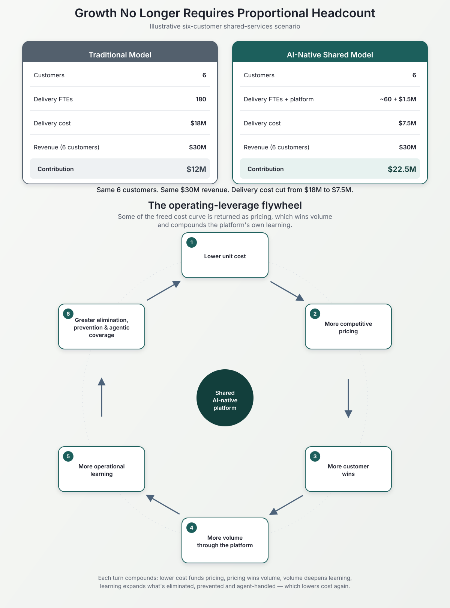

Much of the enterprise AI conversation is framed around labor reduction. How many people can AI replace? How many FTEs can automation remove? How much cost can be taken out? Those are legitimate questions. But they may miss a more consequential opportunity.
What if AI allows an enterprise to increase its capacity substantially without increasing its human operating footprint at the same rate?
That changes the conversation from labor reduction to operating leverage.
I saw this firsthand while building an AI-native shared-services delivery platform supporting Service Desk, NOC, and L2/L3 infrastructure operations across server, network and storage environments.
The objective wasn't simply to automate tickets. It was to change the relationship between workload, capacity, cost, service quality and growth.
The constraint hidden inside traditional managed services
Consider a managed-services organization providing 24×7 support across Service Desk, NOC and infrastructure services. The conventional model has relatively predictable economics. More customers create more incidents, service requests and operational workload. More workload eventually requires more engineers. Twenty-four-hour coverage requires multiple shifts, specialized skills and sufficient staffing to maintain service levels.
The relationship is approximately:
Automation can improve portions of this equation. But if the underlying workflow remains intact, growth remains substantially coupled to human capacity. We approached the problem differently. Instead of beginning with how do we automate this work, we started with:
Should this work exist at all?
Eliminate first. Then automate. Then assist.
The operating model followed a deliberate sequence, and the sequence matters:
Eliminate. Recurring incidents were analyzed to determine whether the underlying condition creating the work could be removed. The best ticket is not necessarily one resolved faster — it is the ticket that never needs to exist.
Predict and prevent. Operational signals were used to identify conditions before they became incidents. This moved portions of operations from reactive resolution toward proactive service assurance. Again, the objective wasn't faster ticket handling — it was less demand for ticket handling.
Self-service and user empowerment. Many service requests and end-user issues didn't need to enter a traditional support queue. Where users could safely resolve or initiate the required action themselves, the platform enabled that interaction directly.
Agentic execution. For work that couldn't be eliminated or prevented, AI agents could interpret the request, gather context, reason over the problem and execute appropriate actions within defined boundaries.
Human assist. Finally, there was the residual workload. When human expertise was required, the objective wasn't simply to route a ticket to an engineer. The platform enriched the escalation with available context, diagnostics, prior actions and relevant information so that the engineer started considerably further into the resolution process. Humans became the expertise and exception-handling layer, rather than the default execution engine.
The capacity equation changes
Now consider what happens when this model operates as a shared-services platform across multiple customers. A conventional managed-services provider onboarding six medium-enterprise customers may need to increase delivery capacity roughly in proportion to customer workload.
For illustration, assume each customer's Service Desk, NOC and infrastructure-support requirements would conventionally require the equivalent of 30 delivery FTEs. Six customers would therefore represent approximately 180 FTEs of delivery capacity.
Now consider a simplified AI-native workload funnel. Suppose transformation eliminates or prevents 50% of incoming operational demand. Of the remaining workload, suppose self-service and agentic execution handle another 35 percentage points.
These percentages are illustrative. Every operating environment will produce different results. And this does not mean that 180 FTEs mechanically become 27 FTEs. A real 24×7 operation still requires sufficient capacity for shift coverage, specialized skills, governance, customer interaction and complex exceptions.
The more important implication is structural: human capacity no longer has to grow proportionally with transaction volume.
What happens to the economics?
Consider an illustrative six-customer shared-services operation.
| Traditional Model | AI-Native Shared Model | |
|---|---|---|
| Customers | 6 | 6 |
| Equivalent delivery FTEs | 180 | 60 |
| Illustrative loaded cost/FTE | $100K | $100K |
| Delivery labor cost | $18M | $6M |
| AI/platform infrastructure | — | $1.5M |
| Illustrative delivery cost | $18M | $7.5M |
These are not historical results or universal benchmarks. They simply illustrate the economics of decoupling workload growth from human capacity.
Assume each customer represents $5M in annual managed-services revenue. Six customers generate $30M annual revenue. Under the simplified traditional model, $30M revenue minus $18M delivery cost equals $12M contribution. Under the illustrative AI-native model, $30M revenue minus $7.5M delivery cost equals $22.5M contribution. Real managed-services P&Ls contain many additional costs, so these figures should not be interpreted as reported operating margins — the important point is the shape of the cost curve. Revenue and customer volume can potentially increase considerably faster than the delivery cost base.

Illustrative scenario only. Figures demonstrate operating-model economics, not reported historical results.
The numbers become more meaningful when viewed as a capacity model rather than simply a cost-reduction model. In the traditional model, each new customer brings another block of human capacity. In the AI-native model, customers increasingly consume a shared pool of digital labor, operational intelligence and human expertise. The economics therefore don't necessarily reset with every customer.
But margin expansion is only one choice
This is where the strategic possibilities become much more interesting. The provider doesn't have to retain the entire economic advantage as margin. Some of it can be returned to customers through more aggressive pricing.
Suppose the provider prices the AI-native service 20% below the conventional $5M contract. Instead of $30M across six customers, revenue becomes $24M. Against the same illustrative $7.5M delivery cost, the simplified contribution becomes $16.5M. The customer receives materially better economics. The provider can still retain substantially better delivery economics. And lower pricing can make the provider more competitive for the next customer.
That creates a very different growth flywheel: lower unit cost funds more competitive pricing, which wins more customers, which drives more volume through the shared platform, which deepens operational learning, which expands what can be eliminated, prevented and agent-handled — which lowers unit cost again.
The AI platform is no longer simply a productivity tool. It becomes part of the commercial operating model.
Customer six should not cost the same as customer one
This is one of the most important consequences of a learning-based shared-services architecture. Traditional delivery models already reuse processes, runbooks and knowledge across customers. An AI-native platform can potentially reuse something more powerful: operational intelligence.
Patterns learned across operations can improve classification, reasoning, prevention, execution and escalation for subsequent environments — while maintaining the necessary customer isolation, security and governance. That means customer six isn't necessarily being onboarded onto the same operating capability that existed when customer one arrived. The platform has learned. Its digital labor has expanded. Its operational knowledge has increased. Its prevention capabilities may have improved. Its human escalation rate may have declined.
The platform can therefore become more capable as the business running through it becomes larger. That turns the learning loop into an economic advantage, not merely an AI feature.
Transform before you transition
There was another important departure from the traditional managed-services model. Managed-services transitions have historically tended to follow something resembling: transition, stabilize, transform. Take over the environment. Stabilize service delivery. Then identify automation and transformation opportunities.
But that sequence can transfer the customer's existing inefficiencies directly into the provider's operating model. We inverted it: transform, transition, continuously learn. Before steady-state operations, run a focused transformation program. Interrogate the incoming work:
- Why does this incident occur?
- Can its root cause be eliminated?
- Can we detect the condition before failure?
- Can the user resolve it without entering the support organization?
- Can an agent execute the resolution?
- What genuinely requires human expertise?
Only then transition the residual workload into steady-state operations. The distinction is fundamental. You are not taking over the customer's work and subsequently trying to automate it.
You are changing the work before accepting the operating burden.
This changes the economics of outcome-based pricing
Outcome-based pricing is increasingly discussed as an alternative to effort-based technology-services models. But there is a structural challenge. A provider cannot easily move away from effort-based pricing while its own economics remain heavily dependent on human effort. If the internal cost model remains people × time × workload, then guaranteeing outcomes transfers significant economic risk to the provider.
AI-native operations can change that equation. Once delivery cost becomes less directly coupled to ticket volume and human effort, the provider gains considerably more flexibility to contract around outcomes such as:
- service availability and reliability,
- reduction in incidents,
- resolution outcomes,
- user experience,
- business-service performance.
The commercial model can begin moving from "how much effort did we provide?" toward "what operating outcome did we deliver?" That is why outcome-based pricing isn't merely a contracting innovation. It requires an operating-model innovation underneath it.
AI unit economics matter too
There is another part of AI-native economics that receives less attention. Replacing labor-intensive operations with extremely expensive AI consumption does not necessarily create a sustainable model. The economics of the intelligence layer matter.
The platform we built used open-weight LLMs, providing greater control over deployment, infrastructure and inference economics. But the more important principle was architectural: don't invoke expensive agentic reasoning for work that should have been eliminated in the first place. The hierarchy matters:
- Eliminate before you predict.
- Prevent before you execute.
- Use deterministic execution where intelligence isn't required.
- Use agentic reasoning where it creates value.
- Escalate to humans where judgment or expertise remains necessary.
That isn't merely an architecture decision. It is AI unit economics.
Capacity, not just cost takeout
This brings us back to the original question. If an AI-native platform allows an operating organization to support five or six customers where a conventional model would require substantially more incremental human capacity, what exactly did AI produce?
Cost reduction? Yes. Productivity? Certainly. But those descriptions are incomplete. It created capacity.
And capacity can be monetized. An enterprise can use that capacity to absorb growth without proportional hiring. A managed-services provider can use it to onboard additional customers. It can convert some of the economics into margin. It can use some to price more aggressively. It can use the changed cost structure to support outcome-based contracts. Or it can combine all three.
This is why measuring enterprise AI primarily by the number of people removed can underestimate its strategic value. The more consequential question may be: how much more business can the existing operating capacity support?
From digital labor to Peak Business Performance
Ultimately, the objective isn't automation. It isn't even autonomous operations. The objective is Peak Business Performance. An AI-native operating model can improve several dimensions simultaneously:
- Cost — by containing the human and infrastructure cost curve.
- Capacity — by allowing workload and customers to grow faster than headcount.
- Margin — through operating leverage.
- Price competitiveness — by sharing part of the economic advantage with customers.
- Availability — through prediction and prevention.
- Experience — through self-service, faster execution and fewer disruptions.
- Human effectiveness — by giving engineers enriched exceptions rather than undifferentiated queues of work.
- Commercial flexibility — by creating the economics required to move toward outcome-based pricing.
And because the platform continuously learns, these are not necessarily static improvements. The operating model can improve as it operates. That is the larger opportunity of AI-native operations.
Don't ask only how much labor AI can remove.
Ask how much capacity intelligence can create — and what new economics that capacity makes possible.
Key Takeaways
- The bigger opportunity from AI may not be labor reduction — it's operating leverage: allowing capacity to grow without human headcount growing at the same rate.
- An elimination-first sequence — eliminate, predict & prevent, self-service, agentic execution, human assist — changes what work a shared-services platform has to staff for in the first place.
- In an illustrative six-customer scenario, delivery cost falls from $18M (180 FTEs) to $7.5M (~60 FTEs plus a $1.5M platform) on the same $30M of revenue — turning $12M of contribution into $22.5M.
- The freed cost curve is a choice, not a fixed outcome: keep it as margin, return part of it as more competitive pricing, or use it to fund outcome-based contracts. Lower unit cost funding more competitive pricing creates a flywheel — more wins, more volume, more learning, more elimination, lower cost again.
- Because the platform learns across customers, customer six doesn't onboard onto the same capability customer one did — operational intelligence compounds, which is what finally makes outcome-based pricing economically viable for the provider.